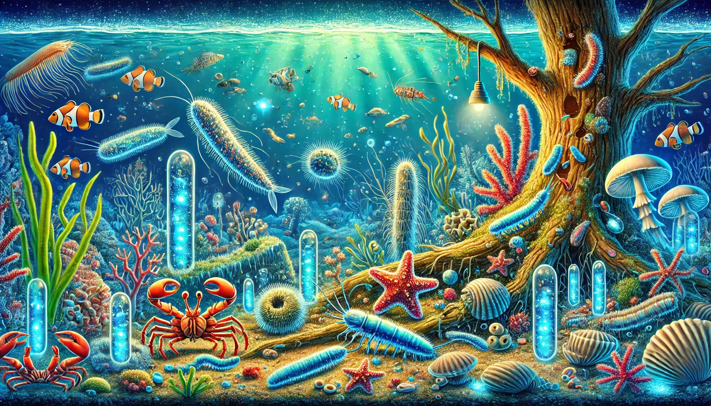

When we think about the ocean, our minds often drift to images of majestic whales, colorful coral reefs, or schools of shimmering fish. But beneath the surface lies a world of unsung heroes—ocean decomposers. These incredible organisms play a vital role in maintaining the health of marine ecosystems by breaking down dead materials and recycling nutrients. From bacteria to mollusks, ocean decomposers are nature’s cleanup crew, ensuring that nothing goes to waste. Let’s dive into the fascinating world of these underwater recyclers and discover how they keep the ocean thriving.
Ocean decomposers are organisms that break down dead plants, animals, and other organic matter into simpler substances. This process, known as decomposition, is essential for recycling nutrients back into the ecosystem. Without decomposers, the ocean would be cluttered with dead material, and vital nutrients would be locked away, unavailable for other marine life.
Decomposers come in all shapes and sizes, from microscopic bacteria to larger creatures like crabs and sea stars. Each has its unique way of gathering and processing dead materials, making them indispensable to the ocean’s health. Let’s meet some of the key players in this underwater cleanup crew.
Bacteria are the ultimate recyclers of the ocean. These microscopic organisms are everywhere—floating in the water, living on the seafloor, and even inside other marine creatures. They are the first responders when it comes to breaking down dead matter.
Bacteria secrete enzymes that break down complex organic materials into simpler compounds like carbon dioxide, water, and nutrients. These nutrients are then absorbed by other marine organisms, creating a continuous cycle of life. Without bacteria, the ocean would quickly become a graveyard of dead plants and animals.
Fun Fact: Did you know that some bacteria can even break down oil spills? These special bacteria, known as hydrocarbon-degrading bacteria, are nature’s way of cleaning up human-made messes in the ocean.
While fungi are often associated with forests and mushrooms, they also play a crucial role in marine ecosystems. Marine fungi are experts at breaking down tough materials like cellulose and lignin, which are found in plant cell walls.
Marine fungi release enzymes that break down dead plant material, turning it into nutrients that other organisms can use. They are particularly important in coastal areas, where large amounts of plant debris wash into the ocean.
Fun Fact: Some marine fungi form symbiotic relationships with other organisms, like algae, to create lichens. These lichens can grow on rocks and shells, adding a touch of color to the ocean floor.
Marine worms, such as polychaetes, are the ocean’s detritivores—organisms that feed on dead organic material. These wriggly creatures are often found burrowing in the seafloor, where they play a vital role in breaking down dead matter.
Marine worms consume dead plants and animals, breaking them down into smaller pieces. This process not only recycles nutrients but also aerates the sediment, making it healthier for other marine life.
Fun Fact: Some marine worms, like the Christmas tree worm, are not only great decomposers but also add a splash of color to coral reefs with their vibrant spiral plumes.
Echinoderms, a group that includes sea stars, sea urchins, and sea cucumbers, are some of the ocean’s most efficient decomposers. These spiny creatures are often found scavenging on the seafloor, where they feed on dead animals and plant material.
Sea cucumbers, for example, ingest sediment and extract organic matter from it, leaving behind cleaner sand. Sea stars, on the other hand, use their tube feet to pry open shells and feed on the soft tissues inside.
Fun Fact: Sea cucumbers have a unique defense mechanism: when threatened, they can expel their internal organs, which later regenerate. Talk about a dramatic way to avoid becoming someone else’s lunch!
Crustaceans, such as crabs, lobsters, and shrimp, are not just delicious seafood—they’re also important decomposers. These hard-shelled creatures are often found scavenging on the ocean floor, where they feed on dead animals and plant material.
Crabs, for example, use their strong claws to break apart dead animals, making it easier for smaller decomposers like bacteria to finish the job. Shrimp, on the other hand, are filter feeders that consume tiny particles of organic matter floating in the water.
Fun Fact: Hermit crabs are known for their habit of using empty shells as homes. But did you know they also help clean up the ocean by eating dead animals and algae?
Mollusks, such as clams, oysters, and snails, are another group of important ocean decomposers. These soft-bodied creatures are often found in coastal areas, where they play a vital role in recycling nutrients.
Clams and oysters are filter feeders, meaning they extract organic particles from the water as they feed. Snails, on the other hand, use their radula—a tongue-like organ—to scrape algae and dead material off rocks and shells.
Fun Fact: Oysters are not only great decomposers but also help improve water quality by filtering out pollutants. A single oyster can filter up to 50 gallons of water per day!
Ocean decomposers are essential for maintaining the health and balance of marine ecosystems. Here are a few reasons why they’re so important:
While ocean decomposers are incredibly resilient, they still face threats from pollution, climate change, and habitat destruction. Here are a few ways you can help protect these vital organisms:
Ocean decomposers may not get the same attention as dolphins or sea turtles, but they are just as important. From bacteria to mollusks, these incredible organisms work tirelessly to keep the ocean clean and healthy. They are the unsung heroes of the deep, ensuring that nothing goes to waste and that life in the ocean continues to thrive.
So, the next time you’re at the beach or enjoying a seafood meal, take a moment to appreciate the hardworking decomposers that make it all possible. After all, without them, the ocean would be a very different—and much messier—place.